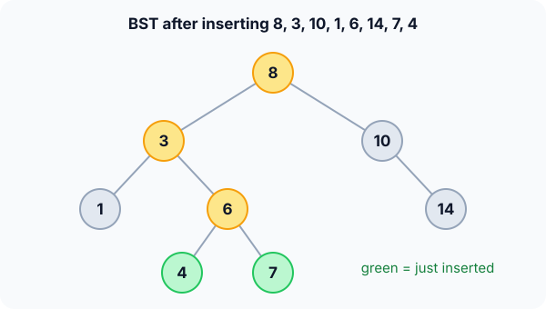

Prerequisites
- Binary tree basics and in-order traversal.
- Binary search: a BST is binary search turned into a tree.
- Recursion.
The analogy
Everyday analogy
Think of the "guess my number" game where each answer is "higher" or "lower". Every answer sends you down one branch, and you never look at the other side again.
A BST stores the answers in its shape: at each node, smaller values live on the left and bigger ones on the right, so finding a value is a short walk down one path.
How it works
Start with an insertion by hand
The tree was built by inserting 8, 3, 10, 1, 6, 14: root 8; 3 and 10 below it; 1 and 6 under 3; 14 to the right of 10. Insert 7 and 4. Predict, then open "Check".
Example: predict before you read
Step 1. Insert 7. Predict the path from the root.
Check
8 (go left), 3 (go right), 6 (go right): 7 becomes the right child of 6.
Step 2. Cover the next line and guess: where does 4 go?
Check
8 (left), 3 (right), 6 (left): 4 becomes the left child of 6.
Step 3. Search for 5. Predict which nodes you compare with, and the result.
Check
8, 3, 6, then 4 (5 > 4, go right), and the right child of 4 is empty: not found after 4 comparisons.

Quick recall: Before reading further, cover the text above and say out loud: what is true at every node of a BST?
Check your answer
All values in its left subtree are smaller and all values in its right subtree are bigger.
Finish the picture: deleting
Delete from the tree above (with 4 and 7 added). There are three cases.
- Delete 3 (two children: 1 and 6). Predict the replacement value and what happens to it.
Check
The successor is the smallest value right of 3: go to 6, then left as far as possible: 4. Copy 4 into 3's node, then delete the old 4 (a leaf).
- Delete 1 (a leaf), then 10 (one child). Predict the changes.
Check
1 just disappears. 10 is replaced by its only child, so 8's right child becomes 14. In-order is now 4, 6, 7, 8, 14.
Quick recall: Without scrolling up, say out loud: when you delete a node with two children, which value replaces it?
Check your answer
Its in-order successor: the smallest value in its right subtree (or the predecessor, the largest in the left subtree).
The rule in plain words
Search / insert: compare with the node; go left if smaller, right if bigger, and stop at a match or an empty spot.
Delete: a leaf is removed; a node with one child is replaced by that child; a node with two children takes its successor's value, and the successor is deleted instead.
Quick recall: Before you read the code, write the steps of insert in your own words. Then check below.
Check your answer
1. If the tree is empty, the new node is the tree. 2. If the value is smaller than the node, insert into the left subtree; if bigger, into the right. 3. Return the (possibly new) subtree root.
The code
Read this code after you have done the insertions and deletions by hand. It will make more sense.
typedef struct Node { int val; struct Node *left, *right; } Node;
Node *insert(Node *t, int v) { /* returns the subtree root */
if (t == NULL) {
Node *n = malloc(sizeof(Node));
n->val = v; n->left = n->right = NULL;
return n;
}
if (v < t->val) t->left = insert(t->left, v);
else if (v > t->val) t->right = insert(t->right, v); /* equal: ignore */
return t;
}Node *remove_key(Node *t, int v) { /* returns the subtree root */
if (t == NULL) return NULL;
if (v < t->val) t->left = remove_key(t->left, v);
else if (v > t->val) t->right = remove_key(t->right, v);
else if (t->left == NULL || t->right == NULL) { /* 0 or 1 child */
Node *child = t->left ? t->left : t->right;
free(t); return child;
} else { /* 2 children: use the successor */
Node *s = t->right;
while (s->left) s = s->left;
t->val = s->val;
t->right = remove_key(t->right, s->val);
}
return t;
}Definition
What you just did, in one line: a binary search tree is a binary tree where, at every node, all keys in the left subtree are smaller and all keys in the right subtree are bigger.
flowchart TD
A{"t is empty?"} -->|yes| B["create node v here"]
A -->|no| C{"compare v with t.val"}
C -->|"v smaller"| D["insert into left subtree"]
C -->|"v bigger"| E["insert into right subtree"]
C -->|equal| F["already present: do nothing"]
How fast is it?
Quick recall: Before looking at the formula, predict: what happens to the height if you insert 1, 2, 3, 4, 5 in that order?
Check your answer
Every value goes right, so the tree is a chain of height 4, and search becomes $O(n)$.
Every operation walks one root-to-leaf path, so it costs the height $h$, which depends on the insertion order:
$$\lfloor \log_2 n \rfloor \;\le\; h \;\le\; n - 1$$Random insertion orders give an expected height of $O(\log n)$. Sorted input gives the worst case, a chain.
| Operation | Balanced | Worst (chain) | Why |
|---|---|---|---|
| Search | $O(\log n)$ | $O(n)$ | One path down |
| Insert | $O(\log n)$ | $O(n)$ | Search for the empty spot |
| Delete | $O(\log n)$ | $O(n)$ | Search, plus finding the successor |
| Min / max | $O(\log n)$ | $O(n)$ | Go left / right until the end |
| In-order (sorted output) | $O(n)$ | $O(n)$ | Visits each node once |
Warning
A plain BST gives no balance guarantee. Inserting sorted data (1, 2, 3, …) builds a chain, and every operation becomes $O(n)$. Self-balancing trees such as AVL fix this.
Exam tip
Deletion with two children is the favourite question. Say: "replace with the in-order successor (minimum of the right subtree), then delete the successor, which has at most one child".
Common mistakes
- Checking only a node's direct children instead of whole subtrees: in a BST, every left-subtree value must be smaller.
- Forgetting to reattach the returned subtree (
t->left = insert(...)), so new nodes are lost. - Deleting a two-child node by moving one subtree up, which breaks the ordering.
Try it yourself
Exercise 1 (warm-up)
Insert 50, 30, 70, 20, 40 into an empty BST. What is its in-order traversal?
Hint
In-order of a BST is always sorted.
Answer
20, 30, 40, 50, 70.
Exercise 2 (a bit harder)
In the BST built from 50, 30, 70, 20, 40, 60, 80, delete 50. Which value becomes the root, and what is the new in-order traversal? Write your answer down before you open it.
Show answer
The successor of 50 is the minimum of its right subtree: 60. It replaces 50 at the root, and the old 60 leaf is removed. In-order: 20, 30, 40, 60, 70, 80.
Did you know?
Did you know?
The sorted-input problem is real: inserting records by increasing ID builds a chain. That is why libraries use balanced trees: C++ std::map and Java's TreeMap are red-black trees.
Because in-order gives sorted output, a BST answers "next bigger value", "all keys between 10 and 20" and "smallest key" in $O(\log n)$ when balanced, which a plain array or list can't do while also allowing fast inserts.
Key points to remember
If you remember one thing from each line, remember the because.
- Search follows one path because each comparison rules out a whole subtree.
- Operations cost $O(h)$ because they walk from the root to at most a leaf.
- Sorted insertion is the worst case because every new value goes the same way, building a chain.
- In-order traversal is sorted because left values are smaller and right values bigger at every node.
- Two-child deletion uses the successor because it is the next value in sorted order and has no left child.
Self-check questions
Answer these in order, out loud. They follow the page, so your answers become the script of your video.
- How is a BST like the "higher or lower" guessing game?
Sample answer
Each comparison says go left (lower) or right (higher), so you follow one path and never look at the other side.
- Walk through inserting 7 into the tree 8; 3, 10; 1, 6; 14.
Sample answer
7 < 8 go left to 3; 7 > 3 go right to 6; 7 > 6 go right, which is empty, so 7 becomes 6's right child.
- Why does
insertreturn a node pointer and get assigned back, as int->left = insert(t->left, v)?A good answer covers the empty-subtree case.
Sample answer
When the subtree is empty, insert creates a new node, and the parent must store a pointer to it. Returning the subtree root and assigning it handles that case and leaves other links unchanged.
- So what is a binary search tree, in one sentence?
Sample answer
A binary tree where every node's left subtree holds smaller keys and its right subtree holds bigger keys.
- Walk through deleting 3 when it has children 1 and 6 (with 4 and 7 under 6).
Sample answer
Find its successor, the smallest value in its right subtree: 4. Copy 4 into the node, then delete the old 4, which is a leaf.
- Why can a BST become as slow as a linked list?
A good answer gives an insertion order.
Sample answer
Inserting sorted values sends every new value to the right of the last one, so the tree is a chain of height $n - 1$ and each operation walks all of it.
- What do search, insert and delete cost?
Sample answer
$O(h)$: $O(\log n)$ on a balanced tree, $O(n)$ in the worst case.
- If you had to teach this to a friend in 2 minutes, what would you leave out, and why?
Sample answer
I'd leave out the code details and the predecessor alternative. I'd keep the higher/lower analogy, inserting 7 down one path, the three delete cases, and "$O(\log n)$ if balanced, $O(n)$ if it becomes a chain".
External resources
- VisuAlgo: Binary search tree: animate insert, search and all three delete cases.
- GeeksforGeeks: Binary search tree: operations with code.
- Wikipedia: Binary search tree: analysis and history.
- MIT OCW 6.006: lecture on binary trees and BST operations.
Videos
- YouTube search: BST deletion explained: pick a walkthrough of the three cases.